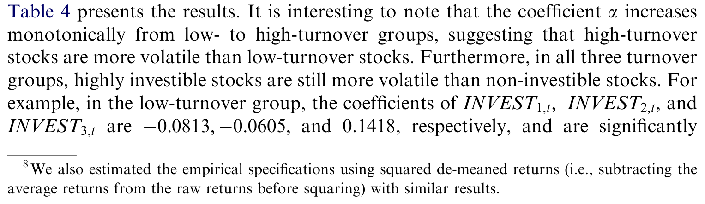
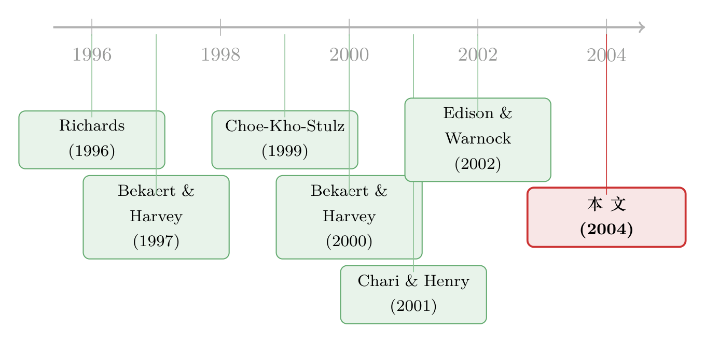

外资能买的股票，为什么更「抖」？——把「可投资度」拆到每一只个股
本文读的是 Bae, Chan & Ng (2004, JFE)：他们没有去数「金融自由化哪一天发生」，而是用 S&P 新兴市场数据库里一个叫「可投资度（investibility）」的变量，把外资「能买多少」精确到每一只个股，然后问——可投资度越高的股票，收益波动是不是越大？答案是肯定的。但真正的转折在于：这份「更抖」并不是外资当「热钱」搅出来的特质噪声，而是因为这些股票更深地嵌进了世界市场，扛上了更大的全球风险敞口（world market beta）。
1 一个被反复指控、却始终定不了罪的嫌疑人
先讲一桩公案。
1997 年亚洲金融危机之后，外国资本几乎被钉在了被告席上。Krugman 有一句被反复引用的话：1996 年资本以每年约一千亿美元的速度涌入新兴亚洲，到 1997 年下半年又以差不多的速度夺路而逃。Stiglitz 说发展中国家「比以往任何时候都更脆弱」，Sachs 等人警告大额流入会让一国「暴露在华尔街交易员最新的情绪之下」。听上去证据确凿：外资就是「热钱」，来去如风，把本就不深的新兴市场搅得天翻地覆。
可吊诡的是，学术界查了十几年，始终没能给这个嫌疑人定罪。
最直接的查法，是去看资本流动和股价的关系，找外资是不是在「追涨杀跌（positive-feedback trading）」、是不是在「羊群（herding）」。Choe、Kho 和 Stulz（1999）、Froot 等人（2001）、Karolyi（2002）确实都发现外资有这些行为倾向——但他们同时发现，外资并没有对股价造成系统性的破坏。另一条查法，是盯着「自由化」这个事件本身：把某国开放资本市场的那一刻定为一个结构性断点，看断点前后波动率有没有跳上去。Bekaert 和 Harvey（1997, 2000）查了 20 个新兴市场，Kim 和 Singal（2000）查了 16 个，结论惊人地一致——自由化平均而言并没有抬高波动率，Kim-Singal 甚至发现开放后第 12 个月起波动率显著下降。
于是局面就僵在这里：直觉说外资有罪，数据说证据不足。
关于「外资到底是不是坏人」这条线，本博客还评过几篇互为补充的证据：《外资真是「蝗虫」吗？》、《外资真有「信息劣势」吗？》 与 《外资来了，全球新闻就传得更快吗？》。它们和本文用的其实是同一批工具、同一个变量。
2 也许，问题出在「问法」上
接着，一个自然的问题是：会不会不是「外资无罪」，而是我们「问错了」？
本文作者抓住了既有文献的一个共同软肋——它们几乎都把自由化当成「一锤子买卖」。给某国标一个开放日期，断点前是「封闭」，断点后是「开放」。可正如 Bekaert、Harvey 和 Lumsdaine（2002）所言，自由化往往不是一个离散事件，而是一个缓慢、零碎、走走停停的过程。Edison 和 Warnock（2002）更进一步指出：拉美国家的开放普遍比亚洲更快、更彻底——用一个「0/1 的开放虚拟变量」去刻画这种参差不齐的进程，本身就丢掉了大量信息。
更要命的是，用国家层面的时间序列去做检验，样本量小得可怜（就那么二三十个国家、若干个断点），统计功效天然孱弱。难怪查不出东西。
于是本文给出了它真正的那一步：放弃时间序列，转向横截面；放弃国家，下沉到个股。
他们用的钥匙，是 S&P 新兴市场数据库（EMDB，前身是 IFC 的数据库）里一个叫「开放程度因子（degree open factor）」、也即「可投资权重（investible weight）」的变量。它衡量的是一只股票在法律上允许外资持有的比例：取值从 0（完全不可投资）到 1（完全可投资）。这个比例为什么会在个股之间差异巨大？因为银行、能源、公用事业、广播这些行业往往被施加更紧的外资持股上限；公司自己的章程也可能设限；在中国、菲律宾这类市场，甚至为本地人（A 股）和外国人（B 股）划出了截然不同的股份类别。
「可投资度」和 De Jong-De Roon（2001）、Edison-Warnock（2002）的「资本管制强度」其实是同一族测度——后者在国家层面用「可投资市值 / 总市值」之比来度量一国的开放程度。本文的创新只在一处：把同样的逻辑做到了个股层面，于是横截面上一下子就有了近二十万个观测。
3 识别策略：用「横截面」换「统计功效」
把思路讲清楚：作者要问的因果是「外资可及性 → 个股波动率」。他们不去赌任何一个自由化日期，而是利用同一时点、同一国家内部，不同股票可投资度的差异来识别。
具体做法分三步。
第一步，分组。 按可投资权重把每只股票（按年末状态）归入三组：
- 不可投资（non-investible）：可投资权重 = 0，外资一股都不能买；
- 部分可投资（partially investible）：0 < 权重 ≤ 0.5；
- 高度可投资（highly investible）：权重 > 0.5，外资可持有半数以上。
为什么是粗粗的三组、而不是按 1% 的精度切细？作者很坦诚：可投资度只是「法律允许外资买多少」，并不等于「外资实际买了多少」。 一只股票哪怕高度开放，外资也未必真去重仓它。把分组切得太细，反而是给噪声让路。在全样本 196,597 个公司-月观测里，约 38% 完全不可投资，约 27% 完全可投资，分布呈现明显的「两头堆」。
第二步，控制。 既然外资可及性可能和别的特征纠缠在一起（受限多的公司往往更小、扎堆在特定行业），那就把这些都摁住——回归里同时控制国家、行业、公司规模、换手率（turnover）。换手率尤其要控，因为「波动率和成交量正相关」几乎是市场微观结构里的铁律，不控住它，「外资搅动交易→波动变大」这条解释就赖着不走。
第三步，看结果，再追问机制。 这是全文的灵魂——先看波动率有没有随可投资度上升，再去拆「为什么」。
4 数据：近二十万个公司-月
把数据摆清楚，结果才站得住。
- 数据源：S&P（原 IFC）
EMDB，覆盖 45 个新兴市场、逾 2000 只股票的月度收盘价、股利、流通股、市值、成交量等。 - 观测单位：公司-月。
- 样本期：1989 年 1 月至 2000 年 9 月。
- 样本量：清洗后约
196,597个公司-月观测（剔除前为 196,864，删掉 267 个极端收益/成交量异常，仅占 0.13%）。 - 国家：33 个进入样本，每国股票数从摩洛哥的 18 只到中国的 259 只不等。
新兴市场的「抖」在描述统计里一目了然：个股月度收益波动率的横截面均值高达 17.67%，俄罗斯甚至到 49.39%，而沙特只有 6.69%；除约旦、摩洛哥、沙特外，所有国家个股的平均月波动率都超过 10%。正因为基数这么高，作者对异常值格外警惕——他们用「大收益却没有放量」这类反常组合做交叉筛查，并和 Datastream 对账，把可疑观测剔掉，生怕几个离群点就把波动率「吹」上去。
各国的开放程度差异极大：阿根廷、马来西亚、波兰、南非、土耳其有超过 75% 的观测落在「高度可投资」组；而尼日利亚、沙特则没有一只股票可投资；中国、捷克、约旦、斯洛伐克、斯里兰卡、津巴布韦也有近 80% 的股票落在「不可投资」组。正是这种参差，撑起了横截面识别的全部底气。
5 主要结果：先看到「更抖」，再看清「为什么抖」
现在揭晓。
结果一：可投资度越高，波动率越高。 在控制了国家、行业、规模、换手率之后，从「不可投资」到「部分可投资」再到「高度可投资」，个股的收益波动率单调上升。如表 4 所示，刻画波动率水平的回归系数随可投资度逐级递增——也就是说，「外资能买」这件事本身，在剥离了规模、行业、交易量等混杂因素之后，仍然和更高的波动率稳健相关。

Table 4: presents the results. It is interesting to note that the coefficient a increases
结果二（关键的反转）：变大的不是「特质风险」。 如果外资真是「热钱」、靠频繁进出把价格搅得乱七八糟，那多出来的波动应该是特质性的（idiosyncratic）——一只股票自己的、和市场无关的噪声。但作者发现：特质风险并不随可投资度上升。 这一刀，几乎把「热钱搅局」的故事斩断了。多出来的波动，不在「私人噪声」这一侧。
那它在哪一侧？
结果三：它在「世界市场风险」这一侧。 作者构造高度可投资与不可投资两个组合，去比它们对世界市场的敞口，发现高度可投资组合的世界市场 beta 显著大于不可投资组合。换句话说，外资能买的那些股票，更深地和全球市场「连在了一起」——它们的涨跌，更多地由世界因子驱动。这与 Chari 和 Henry（2001）的发现一脉相承：他们逐公司计算个股收益与本地/世界市场协方差之差，发现可投资公司的协方差差为 0.018，不可投资公司只有 0.0096，可及与不可及的股票在 beta 上确有可观差距。
把三条结果串起来，一个干净的故事就浮出水面：
外资能买的股票之所以更抖，不是因为外资在里面兴风作浪，而是因为它们被「拉进」了世界市场。 一只完全封闭的股票，波动只由本地因子驱动；一旦对外资敞开，它的预期收益就要承受全球风险溢价的定价，世界 beta 抬升，于是世界因子也开始替它「贡献波动」。更高的波动，是市场整合（market integration）的副产品，而非市场被破坏的证据。
这就是为什么过去用「自由化日期 + 时间序列」总也查不出名堂——整合带来的波动上升是渐进的、横截面分化的，被一个粗暴的 0/1 断点和小样本时间序列稀释得无影无踪。换一把「横截面 + 个股可投资度」的尺子，它才显形。
6 文献脉络
把这篇论文放回它的坐标系里看，脉络其实很清晰。
起点是一桩悬案。 Richards（1996）比较 1992–1995 与 1972–1992 两段时期，发现外资唱主角的年代波动率并没有特别高；Bekaert 和 Harvey（1997, 2000）、Kim 和 Singal（2000）用「自由化事件」逐一检验，反复得到「开放不太抬高波动」的结论。这些工作奠定了「外资未必有罪」的基调，但用的都是国家层面、时间序列、事件断点的范式。
转折来自对「事件范式」的反思。 Bekaert、Harvey 和 Lumsdaine（2002）点破自由化不是离散事件；Edison 和 Warnock（2002）、De Jong 和 De Roon（2001）则提出用「可投资市值占比」这种连续测度取代 0/1 虚拟变量，在国家层面量化资本管制的强弱。与此同时，另一支文献（Choe-Kho-Stulz, 1999；Froot 等, 2001；Karolyi, 2002）从交易行为入手，确认外资会追涨、会羊群，却找不到破坏性证据；Rouwenhorst（1999）则细致梳理了 EMDB 的数据坑（幸存者偏差、数据错误）。

而把镜头从「国家」推到「个股」的，是 Chari 和 Henry（2001）和本文。 Chari-Henry 用个股数据算出可投资与不可投资公司在 beta 上的差异；Bae、Chan 和 Ng 则更进一步，直接把可投资度当作横截面解释变量，一举回答「可及性 → 波动率」这个被时间序列范式长期遮蔽的问题，并把答案归因到「世界市场整合」而非「热钱搅局」。它正好坐在「连续可投资测度」与「个股层面分析」两条支流的交汇处。
7 评论与延伸（Q&A + 研究方向）
(a) 几个可能的疑问
Q：可投资度只是「法律上能买多少」，又不是「外资真买了多少」，这测度靠谱吗？
作者自己最先承认这个缺陷。但要注意它的方向：如果「法律开放」和「实际持有」之间噪声很大，那只会削弱而非夸大可投资度与波动率的相关——也就是说存在一个偏向「找不到关系」的偏差。既然在这种不利条件下仍然查出了稳健的正相关，结论反而更可信。粗分三组、不切细，也是为了不给这层噪声放大的机会。
Q：会不会只是「换手率高的股票波动大」，而外资爱买高换手的票，纯属混杂？
这正是回归里把换手率（turnover）作为控制变量摁住的原因。「波动率—成交量」正相关是微观结构铁律，不控住它，结论就立不住。控制之后可投资度的系数依然显著为正，说明这不是单纯的交易量故事。
Q：「更抖」难道不是坏事吗？为什么作者把它解读成好事（整合）？
因为关键不在「抖不抖」，而在「抖在哪一侧」。如果多出来的是特质风险，那才是「热钱搅出来的噪声」，是纯损失；但本文发现特质风险不随可投资度上升，多出来的波动来自更高的世界市场 beta。承受全球系统性风险是市场整合的应有之义，它对应的是更低的资本成本（Bekaert-Harvey, 2000；Henry, 2000）——所以这份波动是「融入世界」的代价，而非「被破坏」的伤痕。
Q：横截面识别能不能反过来——是「波动大的股票更容易被允许外资买」？
这种反向因果在制度上不易讲通：外资持股上限多由行业属性（银行、能源、公用事业、广播）和公司章程决定，是相对外生于个股波动的制度安排，而非监管者盯着波动率去逐只调节。不过这仍是识别上最该追问的点——一个更干净的设计会去利用外生的上限调整事件（见下文研究方向）。
Q：这和「自由化提高相关性」的老结论冲突吗？
不冲突，而是互补。Bekaert-Harvey（2000）发现开放后新兴市场组合与世界组合的相关性从 0.7% 升到 4.9%——这是国家层面、时间维度的整合证据；本文给的是个股层面、横截面的整合证据：越开放的股票世界 beta 越高。两者指向同一机制的不同切面。
Q：样本横跨 1989–2000，正好包住 1997 亚洲危机，结果会不会被那几年绑架？
危机确实是「外资是热钱」指控的源头，所以把它纳入样本反而是对「热钱说」最有利的检验环境。即便如此，作者也没发现可投资度推高的是特质风险——这让「危机=外资搅局」的叙事更难成立。当然，把样本切成危机前/中/后做子样本稳健性，会让结论更有说服力。
(b) 几个可能的研究问题与提案
1. 把「法律可投资度」换成「实际外资持股」再做一遍。 【经济故事】本文最大的软肋是「能买」≠「买了」。如果用真实外资持股比例（如今 FactSet/EPFR、或各国托管数据可得）替换可投资权重，「整合 → 高 beta → 高波动」这条链能否被实际持仓复现？还是说真正驱动 beta 的另有其人？ 【可行性】中。实际外资持股数据在 2000 年后才逐渐可得且覆盖不均，新兴市场尤甚；识别上需处理「外资择股」的内生性（外资本就偏好某类股票）。
2. 利用外资持股上限的外生调整做事件研究。 【经济故事】像正文提到的——韩国 1997 年把上限从 20% 提到 23%、马来西亚 1998 年实施管制——这些是相对外生的、个股/行业层面的上限变动。围绕这些事件做股票级的双重差分（DiD），能把「可投资度 → 世界 beta」从横截面相关推到更接近因果。 【可行性】中高。EMDB 与各国监管公告可定位上限调整日期；难点是上限变动常成批发生、且与宏观环境同步，平行趋势需小心论证。
3. 把这套逻辑搬到新兴市场公司债/信用市场。 【经济故事】股票有「可投资度」，债券同样有外资准入限制（QFII 额度、本币债开放节奏等）。开放程度更高的主权/公司债，是否也扛上了更大的全球信用因子 beta、从而波动更大、利差对全球风险更敏感？这直接关系到新兴市场的融资成本与流动性脆弱。 【可行性】中。债券外资准入数据较散、个券交易稀疏，波动率与流动性需用更稳健的低频测度（可借鉴 《数不清的「零」》 那类「零收益占比」思路）来估计。
4. 区分「整合带来的波动」与「流动性冲击带来的波动」。 【经济故事】本文把多出来的波动归给世界 beta，但开放也可能改变股票的流动性结构。能否把波动进一步拆成「世界因子贡献」「本地因子贡献」「流动性贡献」三块，看可投资度主要喂大了哪一块？这能更精细地回答「整合 vs 搅局」之争。 【可行性】中。需要个股层面的流动性测度和因子分解，方法上不难，数据清洗是主要成本。
8 参考文献
我的判断：这篇论文最漂亮的地方，是用一个测度上的小创新（把国家级的资本管制比，下沉成个股级的可投资度）撬动了一个范式上的大转换（从时间序列事件研究，转向横截面识别），从而把一个被「自由化日期 + 小样本」长期遮蔽的关系——可投资度与波动率的正相关——清晰地揭示出来，并干净利落地把它归因于「世界市场整合」而非「热钱搅局」（特质风险不升、世界 beta 升，这一对比是全文的题眼）。
对识别，我仍有两点保留。其一，「法律可投资度」与「实际外资持股」之间的鸿沟始终存在，本文只能论证「偏差方向对自己不利」，却无法直接证明是外资行为在驱动——严格说，它识别的是「可及性」的关联，而非「外资持有」的因果。其二，横截面相关再稳健，也挡不住「遗漏的、与可投资度共变的国家×行业特征」这层担忧；用外生的上限调整事件做股票级 DiD，会是更有说服力的下一步。
我最想看到的后续，是把这套「可投资度 → 世界 beta → 波动」的链条搬到新兴市场公司债与信用市场，并用真实外资持仓而非法律上限去复核——那里既是当下外资定价权之争的主战场，也是流动性脆弱性最值得担心的地方。
- Bae, K.-H., Chan, K., Ng, A. (2004). Investibility and return volatility. Journal of Financial Economics 71(2), 239–263.
- Bekaert, G., Harvey, C. (1997). Emerging equity market volatility. Journal of Financial Economics 43(1), 29–78.
- Bekaert, G., Harvey, C. (2000). Foreign speculators and emerging equity markets. Journal of Finance 55(2), 565–613.
- Bekaert, G., Harvey, C., Lumsdaine, R. (2002). Dating the integration of world capital markets. Journal of Financial Economics 65(2), 203–249.
- Chari, A., Henry, P. (2001). Stock market liberalizations and the repricing of systematic risk. Working paper, Stanford University.
- Choe, H., Kho, B., Stulz, R. (1999). Do foreign investors destabilize stock markets? The Korean experience in 1997. Journal of Financial Economics 54(2), 227–264.
- De Jong, F., De Roon, F. (2001). Time-varying market integration and expected returns in emerging markets. Working paper, University of Amsterdam.
- Edison, H., Warnock, F. (2002). A simple measure of the intensity of capital controls. Working paper, IMF.
- Froot, K., O'Connell, P., Seasholes, M. (2001). The portfolio flows of international investors. Journal of Financial Economics 59(2), 151–193.
- Henry, P. (2000). Stock market liberalization, economic reform, and emerging market equity prices. Journal of Finance 55(2), 529–564.
- Kim, H., Singal, V. (2000). Stock market openings: experience of emerging economies. Journal of Business 73(1), 25–66.
- Richards, A. (1996). Volatility and predictability in national markets: how do emerging and mature markets differ? IMF Staff Papers 43(3), 461–501.
- Rouwenhorst, G. (1999). Local return factors and turnover in emerging stock markets. Journal of Finance 54(4), 1439–1464.